해커튜브와 0.2%의 사람들
출발은 금요일 밤 11시예요. 카파시는 유튜브를 켰다가 '망가질 대로 망가진 슬롭의 벽'을 봤어요. 터무니없이 부풀린 썸네일에 늘 같은 추천뿐이었죠. 다음 날 토요일 아침, Opus 5.5에게 일을 하나 맡겼어요. 아래는 그날 올린 블로그 글이에요. 첫 문단 마지막 줄에 맡긴 일이 그대로 적혀 있어요.
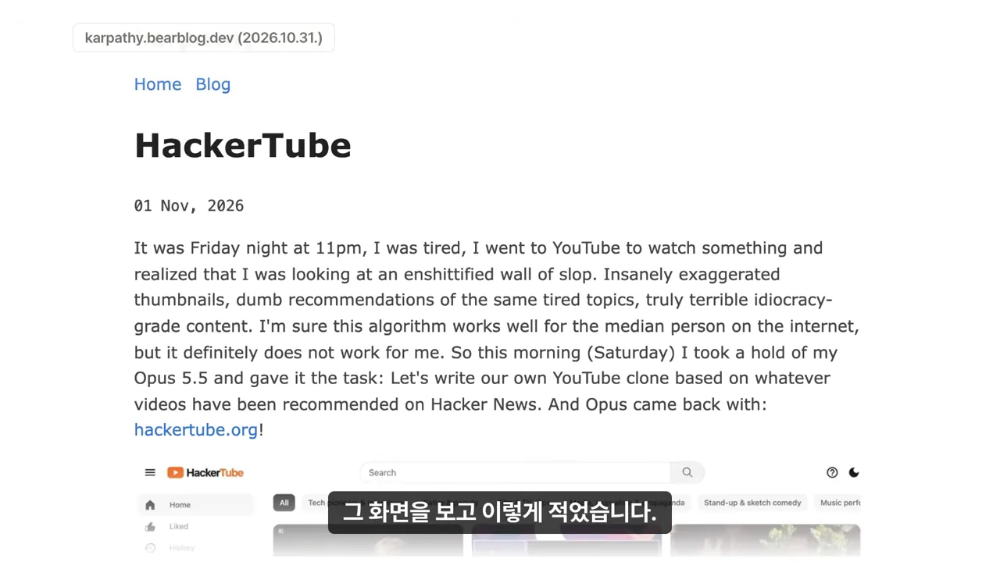
두 시간 뒤 정말 유튜브가 하나 생겼어요. 이름은 해커튜브(HackerTube)예요. 화면은 유튜브와 거의 같고, 오른쪽 위 꼬리표 두 개가 핵심을 말해 줘요. 영상 6,454개, 해커 뉴스 2007~2026년이에요.
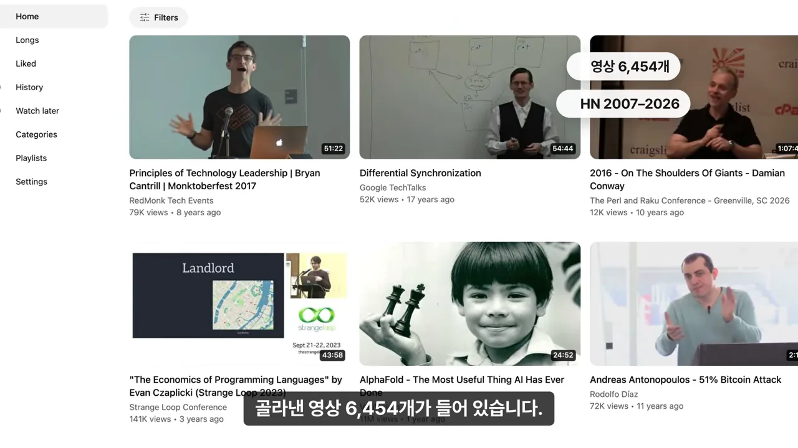
만든 사람은 OpenAI를 함께 세웠고, 테슬라에서 AI를 이끌었고, 바이브 코딩이라는 말을 처음 쓴 안드레이 카파시예요. 영상은 그가 올해(2026년) 5월 Anthropic에 합류했다고 소개해요. 발표 트윗은 조회수 587만 회를 넘겼어요.
정작 눈에 띄는 건 글 아래 덧붙인 문단이에요. 빨간 밑줄 친 부분이 그 내용이에요. 이제 전통적인 엔지니어링 비슷한 일은 하나도 하지 않는대요. 코드를 읽지도 쓰지도 않고, 터미널 명령도 치지 않아요. Claude와 대화만 하고 모든 일을 Claude가 하게 해요.
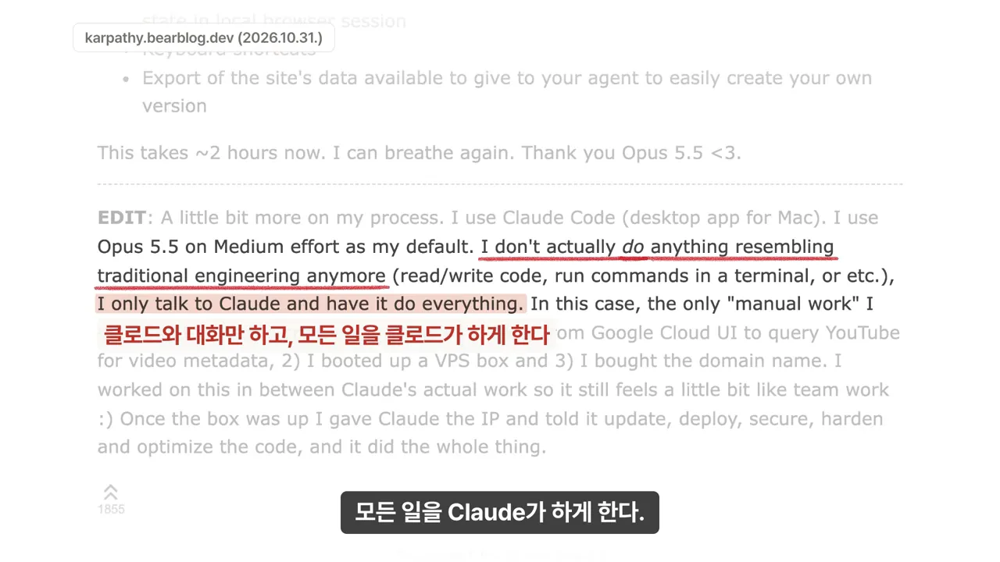
왜 추천이 그 모양일까요
해커 뉴스 스레드에서 누가 묻자 카파시는 이렇게 답했어요. 알고리즘은 보통 사람들의 취향으로 학습되니, 자기 같은 사람은 반올림 오차일 뿐이래요.
Basically I think we see a massive deterioration of quality because we are a rounding error.
우리는 반올림 오차라서 품질이 크게 떨어지는 걸 보는 거라고 생각해요.
— 카파시의 해커 뉴스 댓글 (영상 01:06 부근)
그 집단이 얼마나 작은지는 카파시가 10월에 올린 '냅킨 계산'에 나와요. 슬라이드는 아래 세 줄을 보여 주고, 맨 꼭대기 5,000명은 말로 덧붙여요.
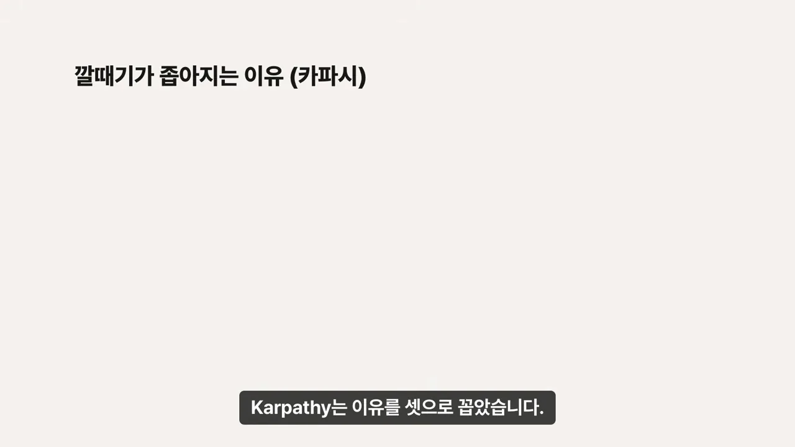
| 집단 | 규모 | AI를 어떻게 쓰나 |
|---|---|---|
| 거의 안 써 본 사람 | 약 60억 명 (~75%) | — |
| 무료 챗봇 사용자 | 10~20억 명 (~20%) | 조금 나은 구글 검색처럼 |
| 에이전트에게 맡겨 보는 사람 | 약 2,000만 명 (0.2%) | 몇 주·몇 달짜리 큰 프로젝트를 프롬프트 하나로 끝내는 걸 지켜봐요 |
| 연구소 내부 | 약 5,000명 | 최전선 시스템을 써요 |
왜 이렇게 벌어질까요? 카파시는 이유를 셋으로 꼽아요. 슬라이드의 체크 세 줄이 그거예요.
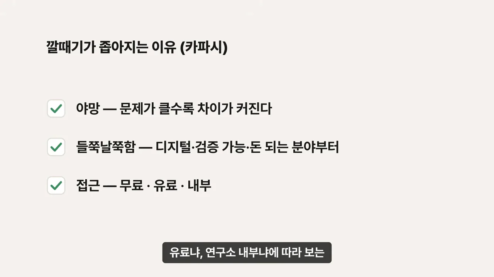
- 야망 — 한 문단짜리 답을 묻는 질문으로는 시스템이 거의 힘을 쓰지 않아요.
- 들쭉날쭉함 — AI 실력은 디지털이고 검증할 수 있고 돈이 되는 분야, 곧 수학과 코드에서 먼저 늘었어요.
- 접근 — 무료 요금제냐, 유료냐, 연구소 내부냐에 따라 보는 세상이 달라요.
카파시 자신도 1년 전에는 코드를 한 글자씩 손으로 쳤대요. 무엇이 바뀌었는지는 2026년 3월 No Priors 팟캐스트에서 말해요. 에이전트가 나오고 12월에 뭔가가 확 뒤집혔대요. 아래 장면의 자막이 그 비율이에요.
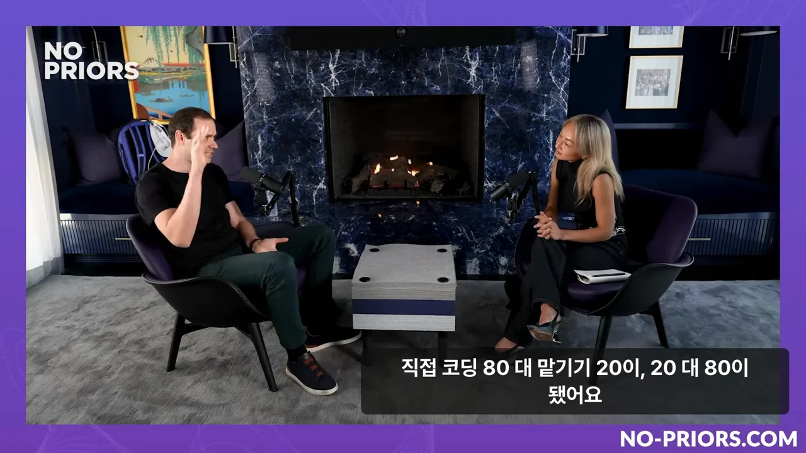
두 시간 동안 실제로 한 일
카파시의 글과 댓글을 이어 붙이면 두 시간의 순서가 나와요. 영상은 이걸 손그림 흐름도로 보여 줘요. 왼쪽 위에서 시작해 시계 방향으로 읽으면 돼요.
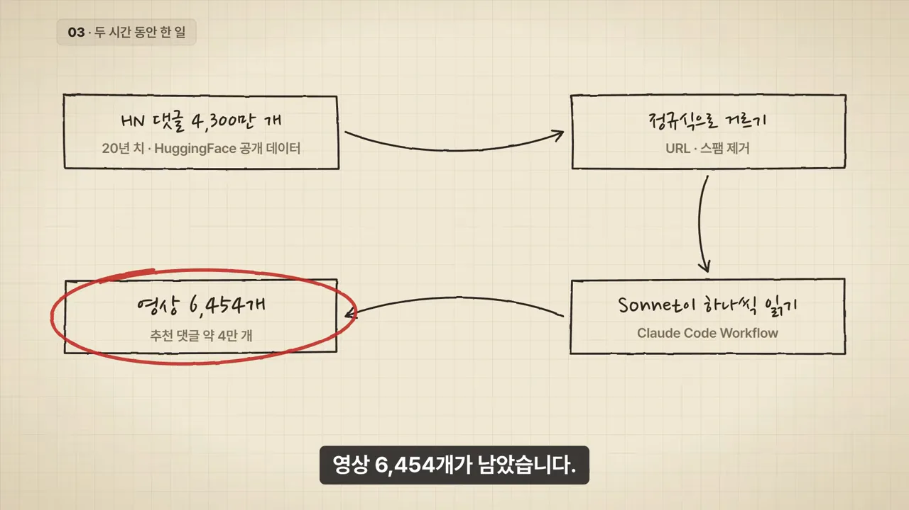
- 댓글 내려받기 — 해커 뉴스 20년치 댓글 4,300만 개. 허깅페이스에 공개된 데이터가 있었어요.
- 기계적으로 거르기 — URL(Uniform Resource Locator)과 정규식으로 유튜브 링크가 있는 댓글만 남기고 스팸을 버려요.
- Sonnet이 하나씩 읽기 — Claude Code의 워크플로우 기능으로 남은 댓글에 이름표를 붙여요.
- 남은 것 — 영상을 추천하는 댓글 약 4만 개, 영상 6,454개.
어떤 영상을 남길지 기준은 해커튜브 소개 페이지에 있어요. 2번 항목의 빨간 밑줄이 그 기준이에요.
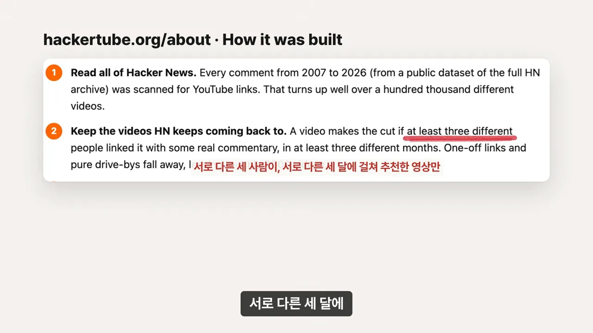
사람이 한 일은 셋뿐
이 과정에서 카파시가 손으로 한 일은 딱 세 가지였어요. 체크리스트 세 줄이 전부예요.
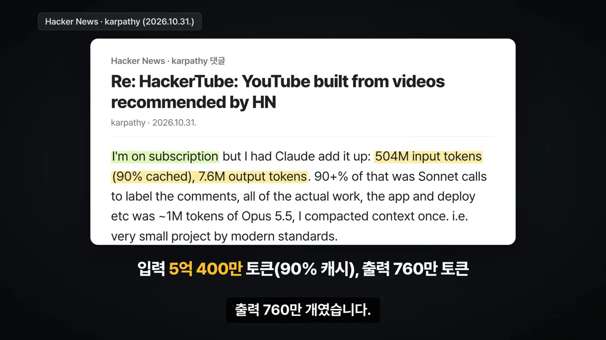
토큰은 얼마나 들었나
카파시는 정액 구독으로 썼다며 Claude에게 토큰을 합산시켜 댓글에 올렸어요. 노란 형광펜 부분이 숫자예요. 입력 5억 400만 토큰(90%는 캐시), 출력 760만 토큰이에요.
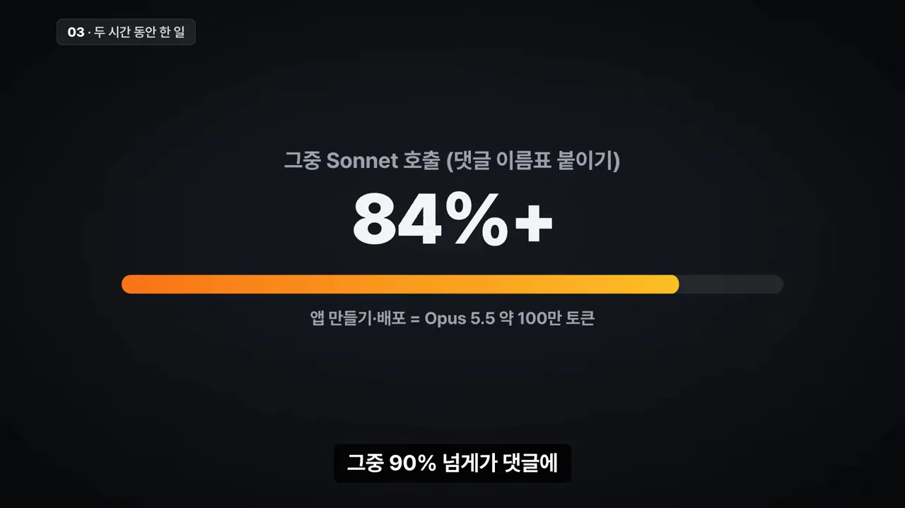
그중 대부분은 앱이 아니라 댓글 분류에 들어갔어요. 막대가 거의 다 찬 90%+가 Sonnet 호출이고, 아래 작은 글씨가 나머지예요.
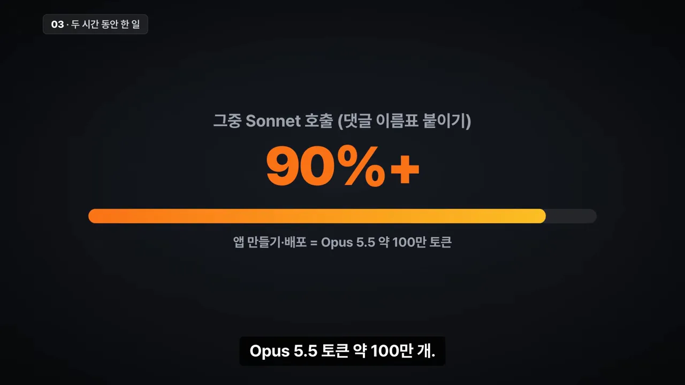
짧고 멍청한 프롬프트
그럼 Claude에게는 뭐라고 말했을까요? 해커 뉴스에서 누가 모델을 어떻게 지휘하느냐고 묻자 카파시가 답한 댓글이에요. 초록 형광펜 세 군데를 차례로 읽으면 요지가 나와요.
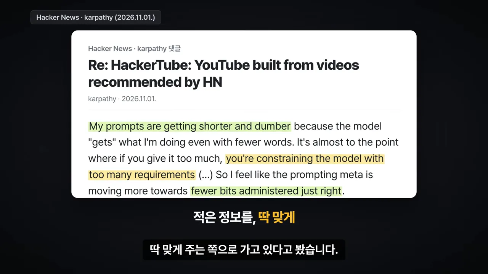
My prompts are getting shorter and dumber because the model "gets" what I'm doing even with fewer words.
모델이 적은 말로도 내가 뭘 하려는지 알아들어서, 내 프롬프트는 점점 짧고 멍청해져요.
— 카파시의 해커 뉴스 댓글 (영상 04:04 부근)
해커튜브에서도 그랬어요. 서버가 켜지자 카파시는 Claude에게 서버 IP(Internet Protocol)를 주고 한 줄을 보냈어요. 화면의 노란 줄이 그 한 줄이고, 손글씨 메모가 '이게 전부'라고 짚어요.
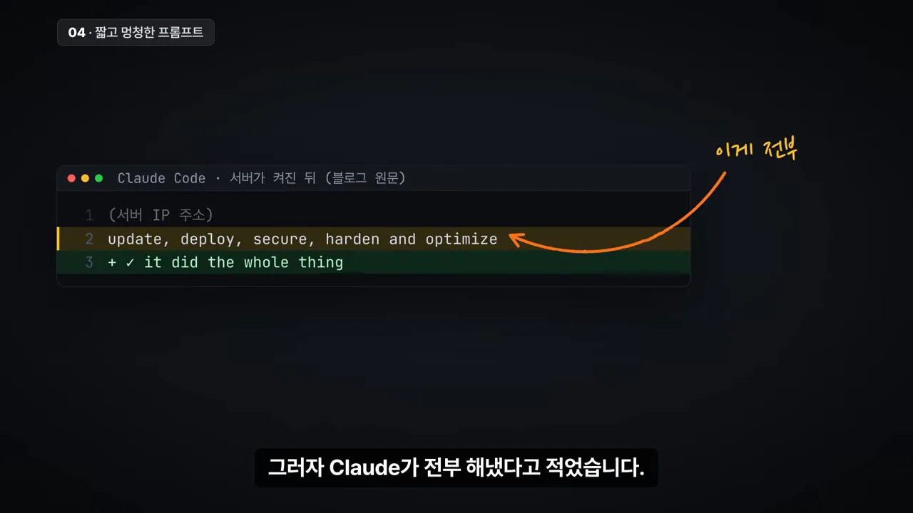
내레이션은 이 다섯 단어를 '업데이트, 배포, 보안 강화, 최적화' 넷으로 옮겨요. secure와 harden을 '보안 강화' 하나로 묶은 거예요. 블로그 원문에도 이 다섯 단어가 그대로 있어요.
보안도 비슷해요. 가끔은 "최근 사이버 쪽 좀 확인해 줘" 정도로만 말한대요. 그러면 Claude가 하위 에이전트 몇 개를 보내 알아서 처리해요.
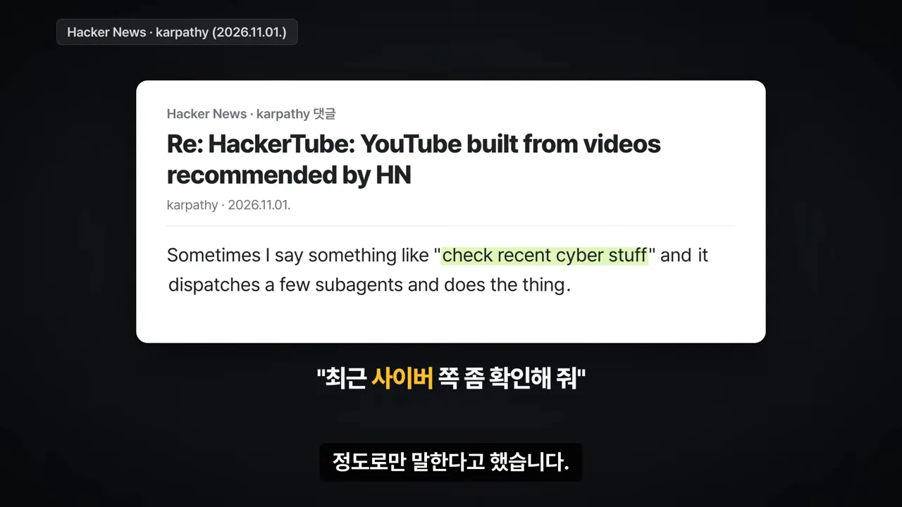
소스 코드를 공개해 달라는 요청에는 반 농담으로 이런 프롬프트를 답글로 달았어요. 사실상 이게 해커튜브의 '소스'라는 뜻이에요.
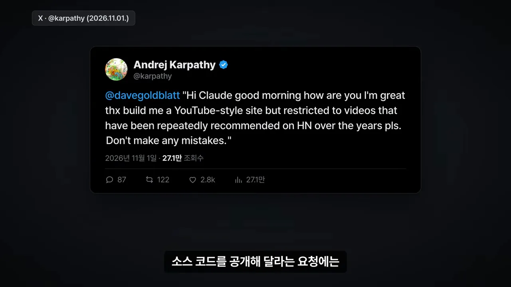
조건: Opus 5.5 이상에서만
다만 조건이 하나 붙어요. 이렇게 짧게 맡기는 건 Opus 5.5 이상에서만 한대요. 노란 형광펜 부분이 그 말이에요.
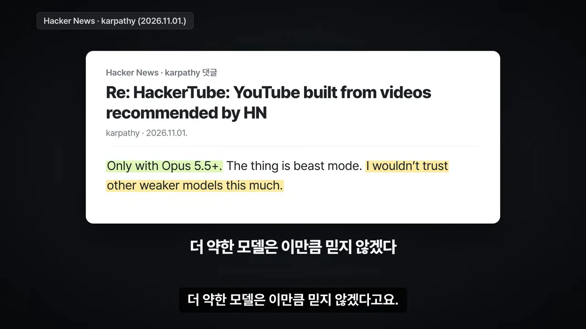
카파시가 밝힌 기본 설정도 단순해요. Mac용 Claude Code 데스크톱 앱에 Opus 5.5, 노력 수준은 Medium이에요.
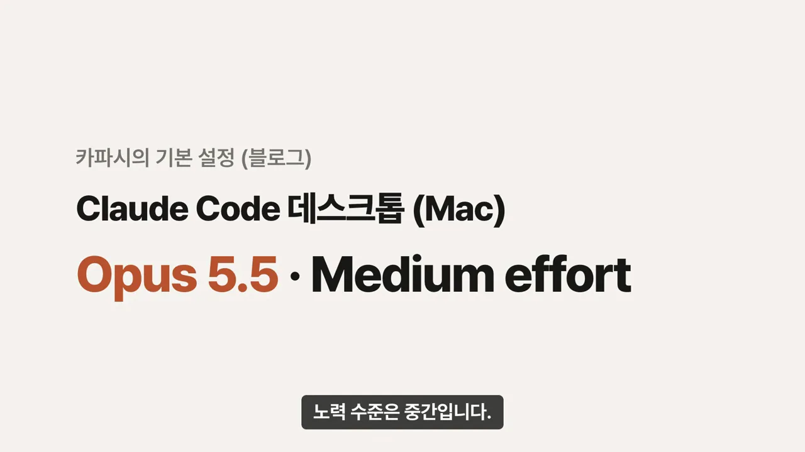
결과는 이해하고, 루프에서는 빠지기
AI가 일을 다 하면 사람은 뭘 할까요? 카파시는 10월 초 X에 글을 올렸어요. 앞으로는 언어 모델의 결과물을 이해하는 데 훨씬 많은 시간을 쓰게 될 거라고요. 그래서 결과물을 받아 보는 방법을 사다리처럼 정리했어요. 영상은 이걸 계단 모양으로 보여 줘요. 아래로 내려갈수록 더 좋은 형식이에요.
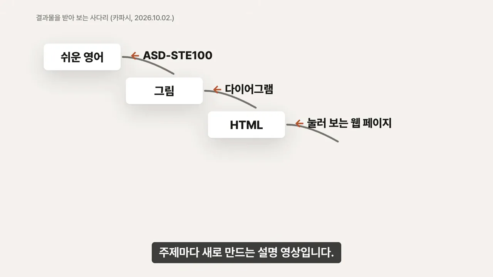
| 단계 | 어떻게 받나 | 왜 좋은가 |
|---|---|---|
| 쉬운 영어 | 항공기 정비 문서용 단순 기술 영어(ASD-STE100)로 설명해 달라고 해요 | 문장이 짧고 뜻이 하나로 정해져요 |
| 그림 | 다이어그램으로 그려 달라고 해요 | 글보다 훨씬 빨리 읽혀요 |
| HTML | 움직이고 눌러 볼 수 있는 웹 페이지로 받아요 | 직접 조작하며 이해해요 |
| 설명 영상 | 주제마다 새로 만드는 설명 영상 | 카파시가 가장 기대하는 형식이고, 실제로 되기 시작했대요 |
글의 결론은 아래 카드의 두 형광펜이에요. 초록은 사람의 일이 감독과 이해 쪽으로 올라간다는 것, 노랑은 크고 맞춤이고 버려도 되는 소프트웨어를 주문하라는 거예요.
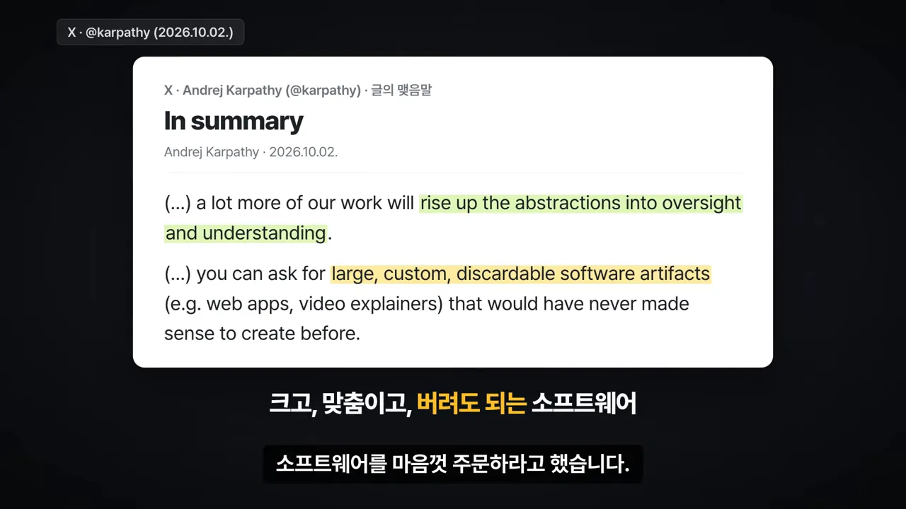
그 사이에는 자리를 비우기
짧게 말하고, 결과를 이해해요. 그럼 그 사이에는 뭘 할까요? 카파시의 답은 아예 자리를 비우라는 거예요. No Priors 팟캐스트에서 한 말이 자막으로 나와요.
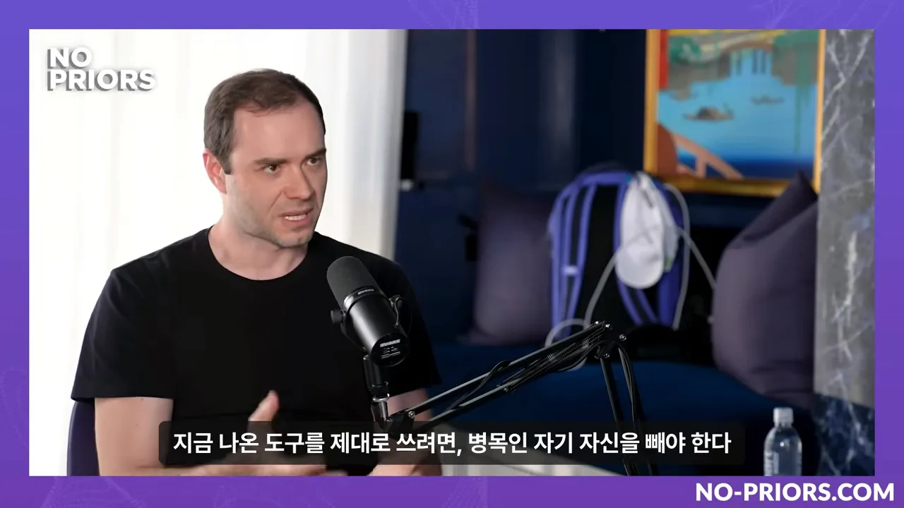
물론 손을 떼려면 믿을 수 있어야 해요. Claude Code를 만든 Boris Cherny가 2026년 1월에 쓴 팁이 그 방법이에요. 형광펜 두 곳을 보면 돼요. Claude에게 자기 작업을 검증할 방법을 주라는 것, 그러면 품질이 2~3배가 된다는 거예요.

해커튜브를 공개한 날 밤에도 그랬어요. 스레드에 기능 요청 댓글이 달리면 카파시는 금세 추가했다고 답했어요. 아래 댓글이 그 변경 기록이에요. 검색·주제 페이지 필터, 업로드일·조회수 정렬 같은 항목이 요청한 사람 아이디와 함께 적혀 있어요.
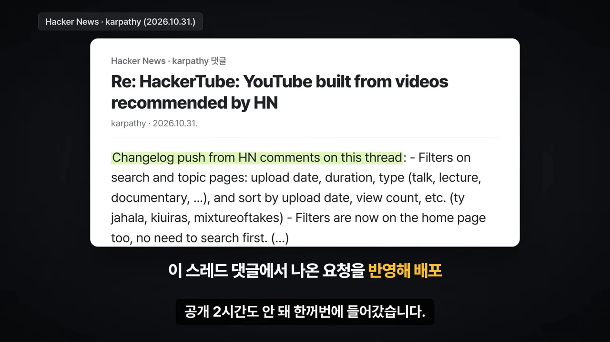
남의 스킬 팩은 효과가 있을까요
요즘은 이런 요령을 스킬 파일로 묶어 내려받는 사람이 많아요. 9월 말에 이걸 직접 재 본 사람이 있어요. GitHub 저장소 skill-placebo예요. 설명 줄에 '가장 별이 많은 코딩 에이전트 스킬의 위약 대조 벤치마크'라고 적혀 있어요.
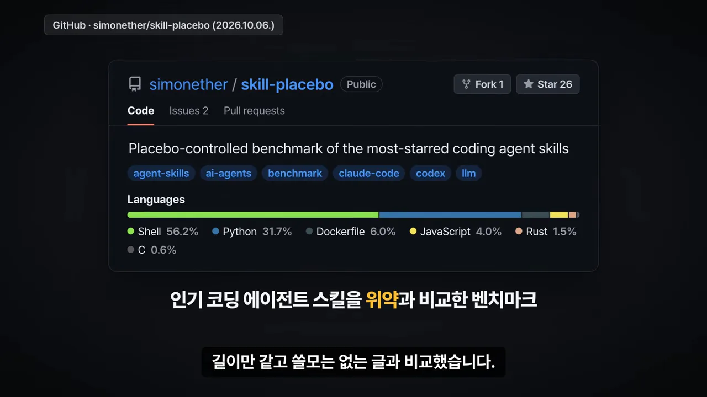
결과는 아래 막대 세 개예요. 가장 긴 막대가 '차이 없음' 6개예요.
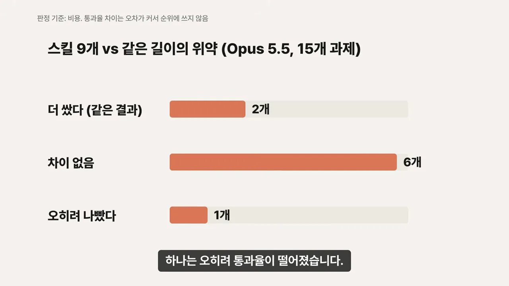
이 아홉 개 중에는 'karpathy'라는 이름이 붙은 스킬도 있었어요. 카파시 본인이 아니라 다른 사람이 만든 거예요.
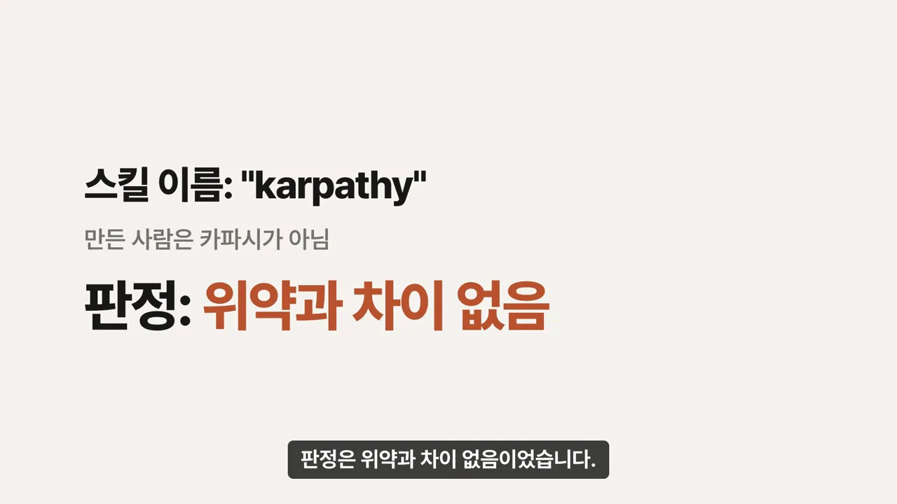
길게 넣는다고 좋은 게 아니에요
길게 많이 넣는다고 좋은 게 아니라는 연구도 있어요. Chroma의 기술 보고서예요. 초록 형광펜이 '모델 18개를 평가'했다는 부분, 노란 형광펜이 결론이에요.
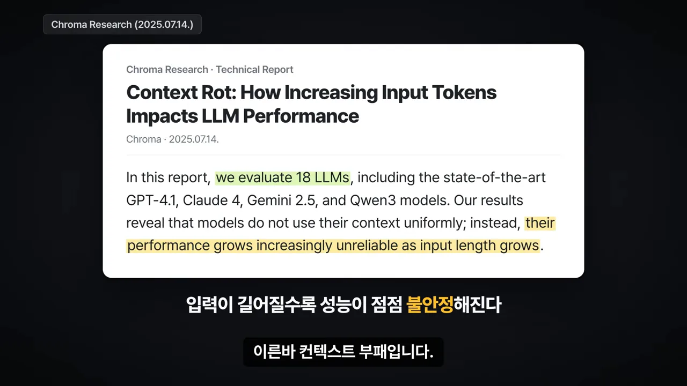
앱은 버려도 된다
해커튜브 코드를 공개해 달라는 사람이 많았지만, 카파시는 서버 코드는 공개하지 않았어요. 이유는 첫 번째 형광펜, '바이브 코딩으로 만든 엉망진창'이라서예요. 대신 댓글을 분석한 데이터를 압축 파일 하나로 올렸어요.
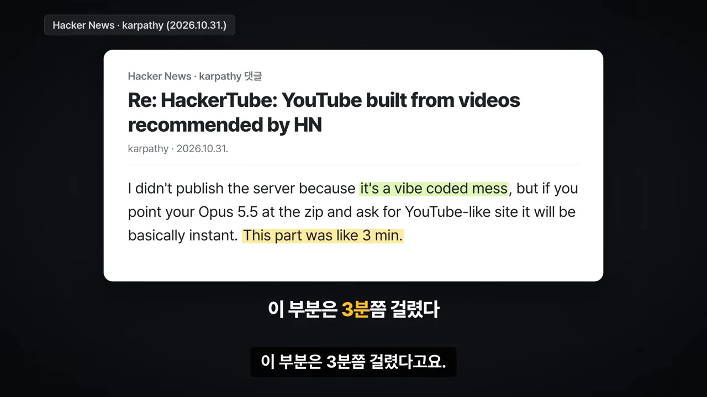
엿새 뒤에는 실제로 그렇게 했어요. 다른 개발자 Tristan이 올린 유튜브 채널 목록을 보고 TristanTube를 만들었어요. 트윗 마지막 줄 괄호 안이 핵심이에요.
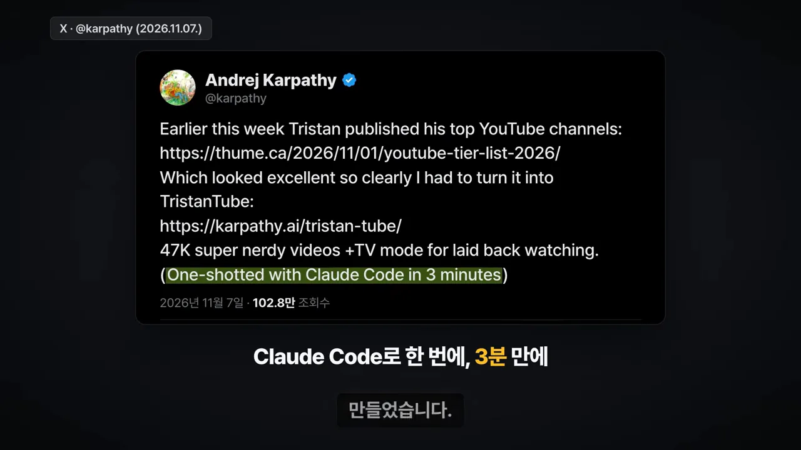
앱이 쉬워지면 앱의 가치는요?
카파시는 Sequoia AI Ascent 행사에서 자기 앱 이야기를 꺼냈어요. MenuGen이에요. 슬라이드의 화살표대로 메뉴판 사진을 올리면 글자를 읽고, 요리마다 그림을 만들어 줘요.
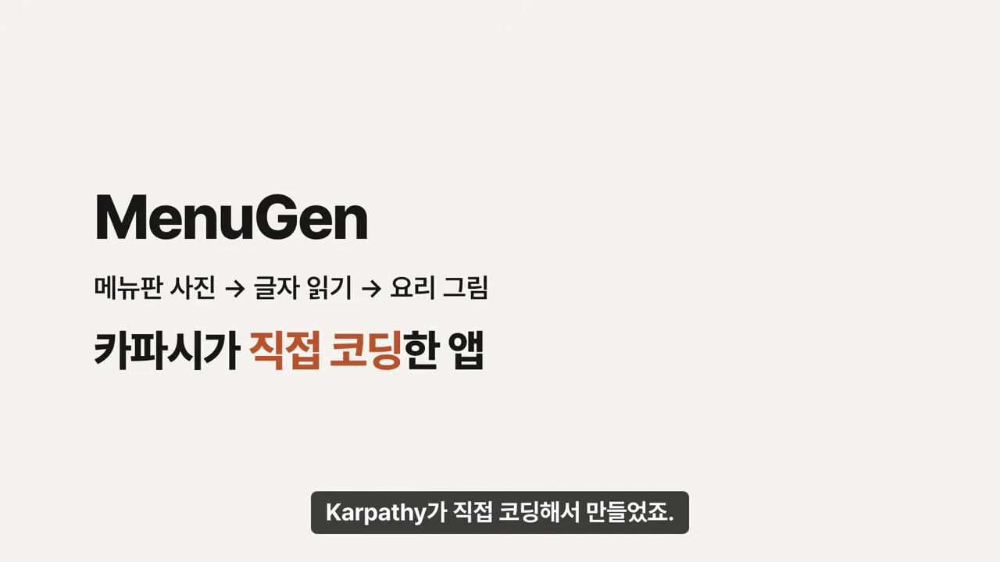
그런데 같은 일을 하는 '소프트웨어 3.0' 버전을 보고 충격을 받았대요. 사진을 그냥 Gemini에 주고, Nano Banana로 메뉴판 위에 요리 그림을 얹어 달라고 하면 끝이에요. 찍은 메뉴판 그대로인데 픽셀 안에 요리 그림이 그려져 나와요.
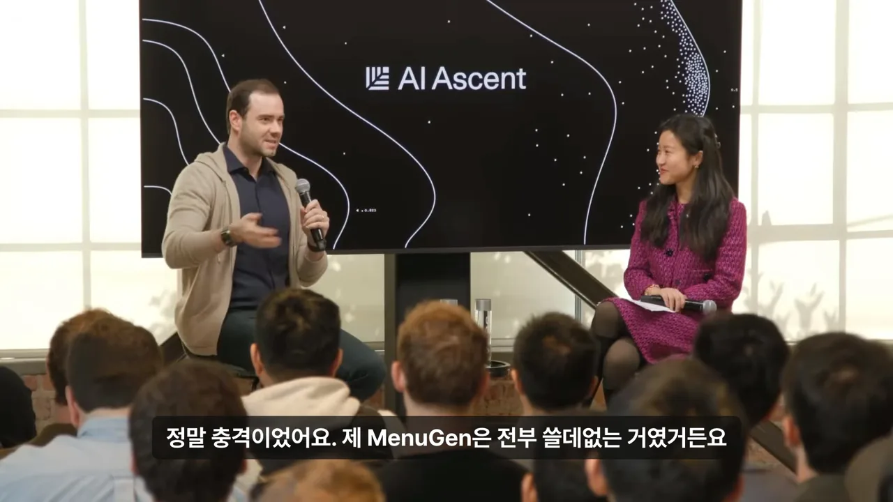
앱이 이렇게 쉽게 나오면, 해커튜브에서 진짜 귀한 건 20년치 댓글에서 걸러 낸 영상 목록이에요. 카파시가 코드 대신 공개한 것도 바로 그 데이터였어요.
무엇이 나은지는 사람이 고른다
무엇이 더 나은지 고르는 일도 사람에게 남아요. 벤치마크 추천을 묻는 댓글에 카파시가 답한 내용이에요. 마지막 줄이 요지예요. 요즘 벤치마크는 아주 나쁜 상태라 사실상 믿지 않는대요.
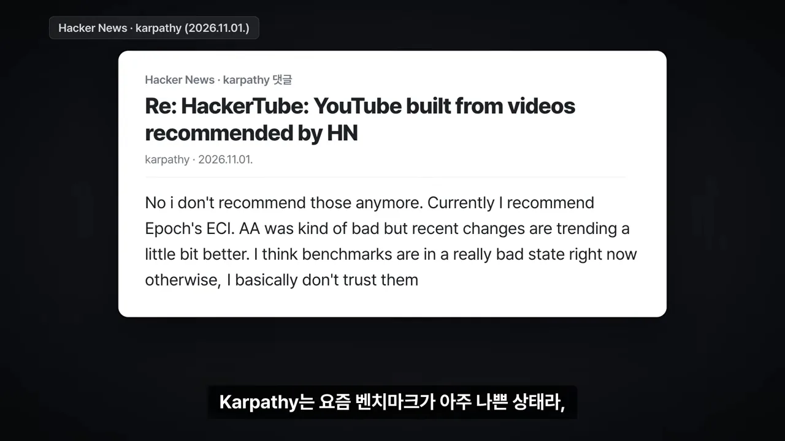
대신 카파시는 Celeste라는 사람이 만든 재미있는 평가를 공유했어요. 위도와 경도만 주고 '육지냐 바다냐'를 지구 곳곳 16,200번 묻고, 답을 점으로 찍어요. 흰색이 육지예요. 빨간 동그라미 두 개를 비교하면 차이가 바로 보여요.
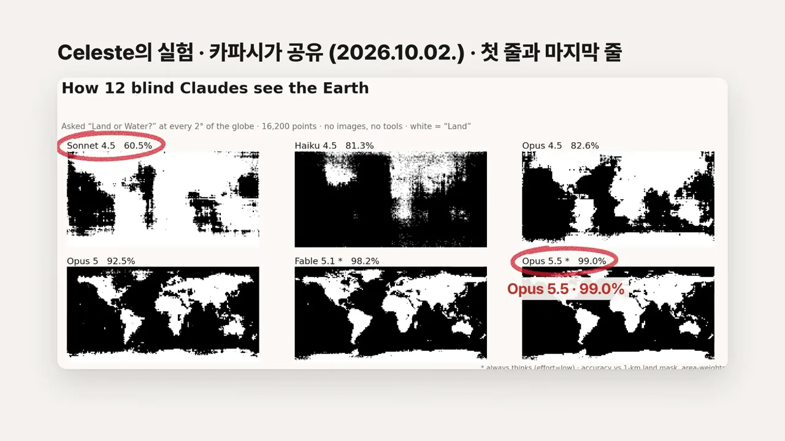
화면은 열두 모델 중 첫 줄과 마지막 줄 여섯 개만 보여 줘요. 내레이션은 Sonnet 4.5를 '60% 남짓', Opus 5.5를 '99%'로 말해요.
정리: 세 가지 습관
카파시는 해커튜브 발표 글을 이 문단으로 끝냈어요. 형광펜이 '아침밥 먹으며 해치울 수 있다'는 부분이에요.
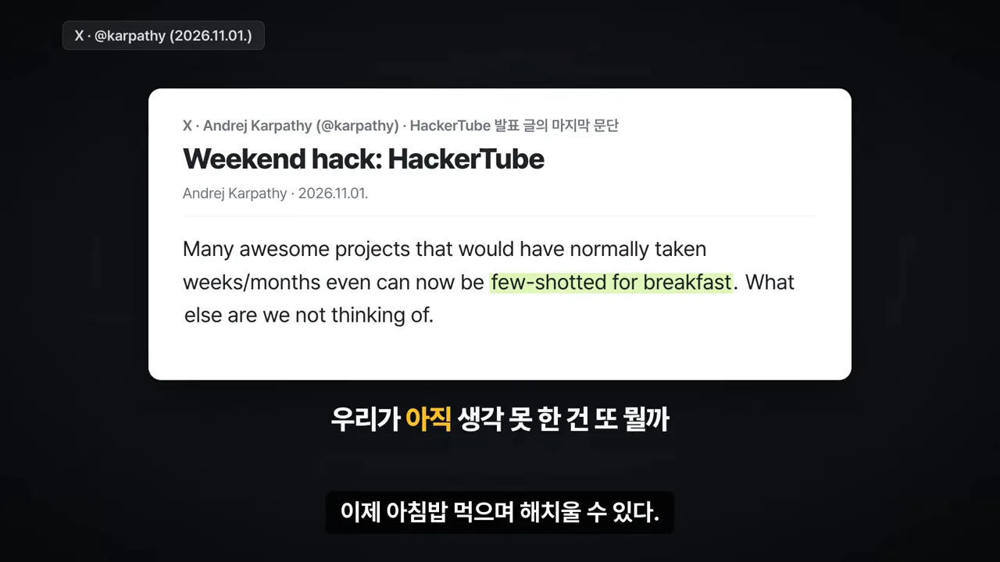
영상은 세 장의 카드로 정리해요. 카드마다 손글씨 제목 아래 작은 글씨가 방법이에요.
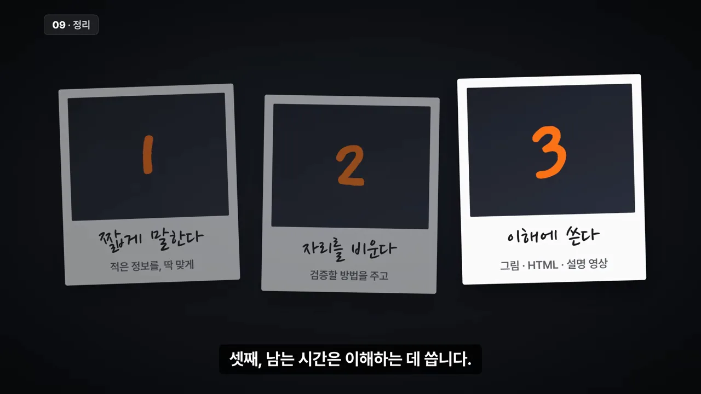
세 습관은 따로가 아니라 한 바퀴로 이어져요. 아래 그림은 영상이 말한 순서를 고리로 옮긴 거예요. 사람이 짧게 맡기면, Claude가 일하고 스스로 검증해요. 결과는 그림·HTML·영상으로 받아 사람이 이해하고 골라요. 그리고 다시 짧게 맡겨요.
카파시는 불평하는 대신 두 시간을 썼고, 글 끝에 "이제야 숨을 쉴 수 있겠다"고 적었어요. 영상은 요즘 화면을 보며 답답했던 게 있다면, 두 시간이면 직접 고칠 수 있을지도 모른다는 말로 끝나요.